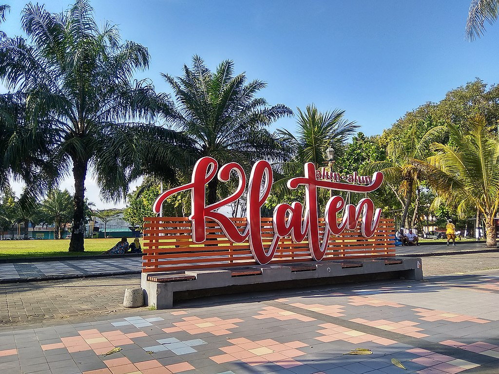

Jawa Tengah
Kabupaten Klaten
Kabupaten Klaten adalah sebuah wilayah kabupaten yang terletak di Provinsi Jawa Tengah, Indonesia. Ibu kota kabupaten ini berada di Klaten, yang merupakan gabungan dari 3 kecamatan yakni Klaten Utara, Klaten Tengah, dan Klaten Selatan, sekitar 36 km sebelah barat daya Kota Surakarta. Kabupaten yang berbatasan dengan Daerah Istimewa Yogyakarta ini memiliki jumlah penduduk sebanyak 1.275.850 jiwa pada tahun 2022 dan mayoritas penduduknya merupakan etnis Jawa.
Secara astronomis, Kabupaten Klaten terletak di antara 110°30'–110°45' Bujur Timur dan 7°30'–7°45' Lintang Selatan. Luas wilayah Kabupaten Klaten mencapai 655,56 km². Di sebelah timur berbatasan dengan Kabupaten Sukoharjo. Di sebelah selatan berbatasan dengan Daerah Istimewa Yogyakarta yakni wilayah Gunung Kidul. Di sebelah barat berbatasan dengan Daerah Istimewa Yogyakarta yakni wilayah Sleman serta Kabupaten Magelang, dan di sebelah utara berbatasan dengan Kabupaten Boyolali.
Jumlah Penduduk
| No | Jenis Kelamin | Jumlah |
|---|---|---|
| 1 | Laki-laki | 647.853 jiwa |
| 2 | Perempuan | 654.795 jiwa |
| 3 | Total | 1.302.648 jiwa |
Kecamatan
- Bayat
- Cawas
- Ceper
- Delanggu
- Gantiwarno
- Jatinom
- Jogonalan
- Juwiring
- Kalikotes
- Karanganom
- Karangdowo
- Karangnongko
- Kebonarum
- Kemalang
- Klaten Selatan
- Klaten Tengah
- Klaten Utara
- Manisrenggo
- Ngawen
- Pedan
- Polanharjo
- Prambanan
- Trucuk
- Tulung
- Wedi
- Wonosari
Website Pemokot Klaten
